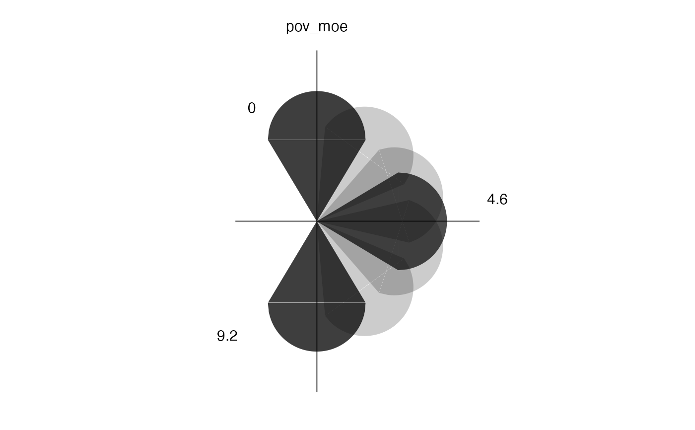

This function creates a key of rotated glyphs for a map produced with
build_gmap.
build_gkey(data, glyph = "icone", fontSize = 3, transparent = FALSE)A data frame.
Name of glyph shape. Options include icone and
semi.
An integer value. Default is 3.
A logical value. Option to make key background transparent. Default is FALSE.
A key for the glyph map is not automatically generated with
build_gmap and must be made using build_gkey. It
is important that the arguments passed to build_gkey match those
passed to build_gmap. The map and key can be viewed together
using attach_key.
data(us_data)
data(us_geo)
co_geo <- subset(us_geo, us_geo@data$STATE == "08")
us_data$GEO.id2 <- as.numeric(us_data$GEO.id2)
co_data <- subset(us_data, us_data$GEO.id2 > 8000 & us_data$GEO.id2 < 9000)
co_data <- read.uv(data = co_data, estimate = "pov_rate", error = "pov_moe")
# build a glyph key
key <- build_gkey(data = co_data, glyph = "icone")
view(key)
